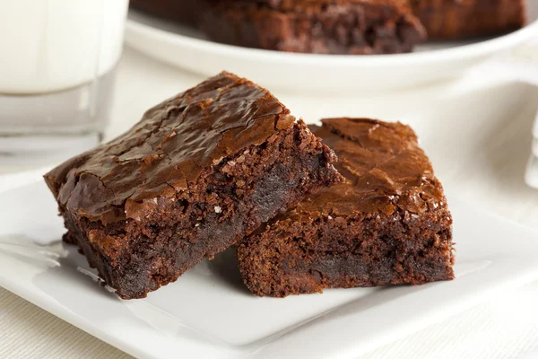

Brownie

Minha receita de brownie, aperfeiçoada após muitos anos de erros e acertos.
Esse brownie fica no ponto que eu gosto: com a casquinha crocante
e o centro macio
Ingredientes
- 4 ovos
- 3 colheres de sopa cheias de manteiga
- 1 xícara de açúcar cristal
- 1 xícara de açúcar demerara
- Uma barra de chocolate meio amarga
- 1 xícara de farinha de trigo
- 3/4 de xícara de chocolate em pó 100% cacau
- Uma colher de chá de extrato de baunilha
- Meia colher de chá de fermento
Modo de Preparo
- Derreta o chocolate e a manteiga em banho Maria
- Bata os ovos e o açúcar e o extrato de baunilha
- Junte itens 1 e 2
- Adicione o trigo + o chocolate em pó + fermento e juntar tudo delicadamente (não pode bater demais)
- Coloque na forma untada e levar ao forno a 160° e deixar por cerca de 20min (depende do forno, o ponto é ter formado a casquinha mas quando enfiar o palito, ele ainda sair meio "sujinho")